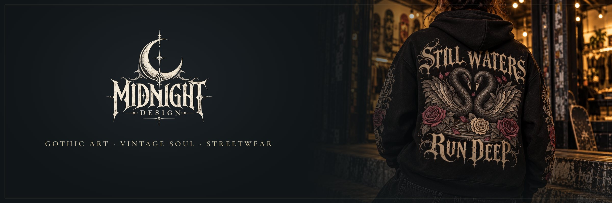
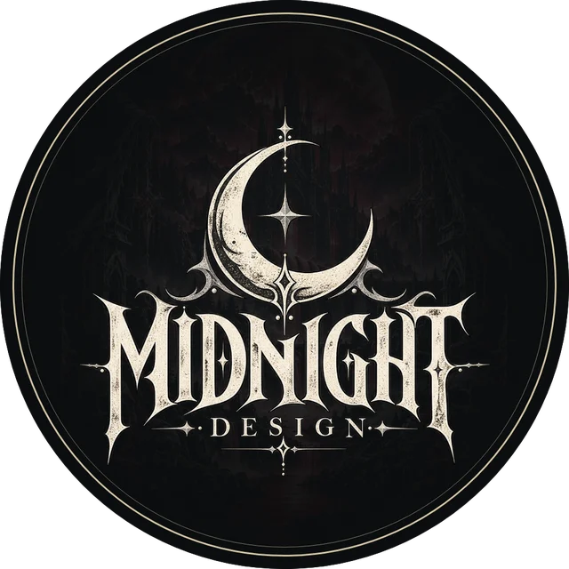

THE CREATOR BEHIND THE BRAND
Midnight Designs
Gothic artwork. Vintage soul. Everyday streetwear.
The Story
Midnight Designs started with a simple idea: the clothes you reach for after dark should say something. Every piece begins as original artwork, from blood-moon cathedrals and hooded reapers to howling wolves, ravens and moonlit butterfly gardens, drawn in a style that is part gothic tattoo flash and part vintage poster.
That artwork is built to be worn, not framed. It runs edge to edge across all-over print hoodies, wraps down sleeves and hoods, and turns up as small pocket emblems on tees, bags and accessories. One design can carry a whole rotation, so a tee, pants and finishing touches can match from head to toe.
Every order is printed on demand and made for you, which means no warehouse full of leftovers and room to keep releasing new designs. If you have an idea of your own, send it in. Custom requests are how some of the best pieces get made.
Dark roots. Everyday rotation. Thanks for wearing the night with us.
Wear the Work
Explore the collection, browse the original artwork, or bring your own idea to life.